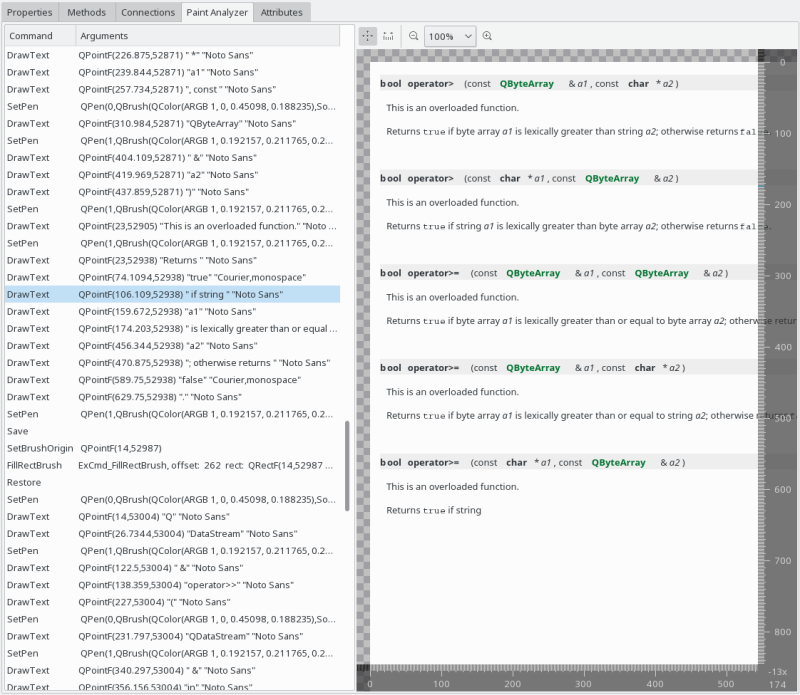

The paint analyzer allows you to inspect every single operation performed on a QPainter. It is typically available on objects using a QPainter for rendering their visual appearance, such as:
Note that the paint analyzer is not applied recursively to children of the selected object, so you see only operations performed by the current object itself, which can even be none for e.g. container widgets. The Widget Inspector therefore additionally provides a paint analyzer showing operations of an entire window.

The paint analyzer consits of two parts, the command list on the left and the render preview on the right. The command list shows all QPainter commands in chronological order, the first column listing the command type, the second showing the command arguments. Selecting a command will cause the render preview to show the visual result up to the selected command, allowing you to inspect the visual output step by step.
The render preview can be panned and zoomed using the corresponding actions in the toolbar at its top. Additionally, a measurement tool is available that way too.